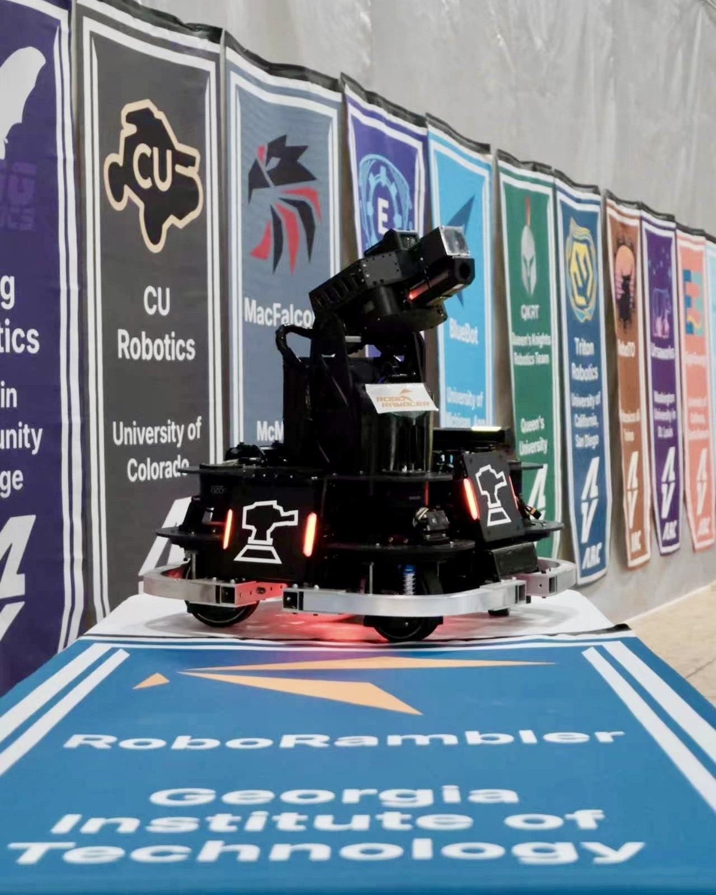
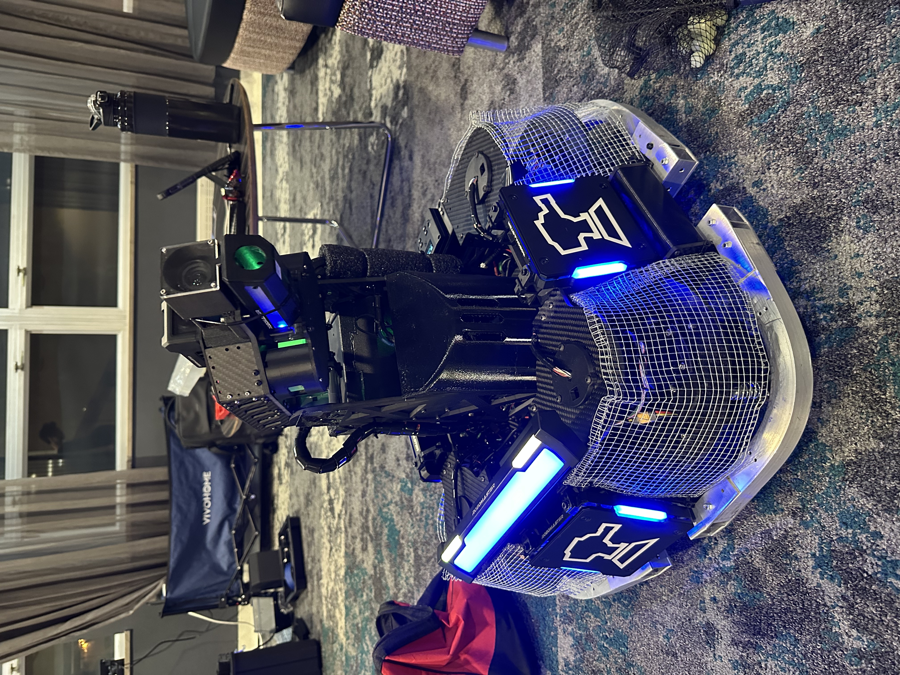

ARCC 2026 Infantry Robot
A competition robot combining a suspension swerve-drive chassis with a turret armed with a rapid-firing 17 mm gun. It helped RoboRambler win its opening 1v1 matches and competed in every 3v3 match as the team's pilot-operated Infantry robot.



Project Overview
Competition rules limited the Infantry robot to 300 Wh of total power capacity, a maximum supply voltage of 30 V, a maximum mass of 25 kg, a 600 × 600 × 600 mm storage envelope, and an 800 × 800 × 800 mm maximum transformation envelope. A supercapacitor system was permitted with up to 2000 J nominal and 2200 J measured energy storage. The Infantry also had to carry a single 17 mm launching mechanism and approximately 3.25 kg of referee-system hardware, including four armor modules, a projectile-speed monitor, video transmitter, field-interaction and positioning modules, and power and control electronics, several of which imposed defined mounting and keep-out requirements.
The chassis frame was built from straight and bent 1 × 1 in aluminum extrusions joined through laser-cut aluminum brackets. Above the aluminum frame, an additional interlocking carbon-fiber structure housed all four swerve-suspension modules. Machined aluminum strips with mutually perpendicular M4 tapped holes joined the carbon- fiber plates, while a main plate approximately 450 × 450 mm supported the gimbal bearing and tied the turret directly into the chassis structure. Components with more complex geometry—including swerve bearing couplers, steering-torque transmitters, ammunition channels, the feed tube, and protective shields—were 3D printed in PLA, PA6-CF, or TPU depending on their mechanical requirements.
My Contribution
- Planned referee-system component placement and designed mounting and protection hardware for electronics.
- Sourced new reduction gearboxes and traction wheels with larger bores to simplify the drivetrain design and raise the chassis' maximum speed.
- Completed the full two-iteration mechanical design process for the suspension swerve chassis.
- Developed MATLAB models and simulated suspension response to multiple terrain inputs.
- Designed TPU shields around the swerve and suspension systems using multi-profile, guide-curve lofts to protect the modules from projectile impacts.
Interactive CAD Model
Explore the complete mechanical assembly and its major chassis, suspension, gimbal, and turret subsystems.
View ARCC 2026 Infantry on Onshape →Chassis Development
After RMNA 2025, the team recognized that suspension was important for maintaining traction during aggressive maneuvers and reducing vibration when the robot crossed uneven field surfaces or ammunition scattered on the ground. Although X-drive offered substantially greater mechanical simplicity, we still valued the traction and translational performance of swerve drive. In one match, our previous swerve robot pushed a disabled opponent X-drive robot out of a capture point with little difficulty. The reverse situation also mattered: a disabled swerve robot is difficult for the predominantly X-drive field to push. We therefore decided to preserve this push-and-resist capability for unexpected match situations while adding suspension.
Among open-source suspension-swerve designs in the ARCC/RoboMaster community, two common suspension-travel mechanisms were four-bar linkages and vertical linear guides that move the entire swerve module—including both steering and drive motors. The latter is often referred to by the community as an "over-the-ring" suspension because the steering motor is commonly a DJI GM6020 with a central through-bore that allows a slip ring to pass through.


Because a faster-spinning chassis reduces the time each armor plate remains exposed to incoming fire, the swerve modules should be packaged as close to the robot center as practical to reduce rotational inertia and enable higher angular acceleration and speed. The conventional suspension layouts were not as compact as an "under-the-ring" arrangement envisioned by our team, in which only the wheel and drive motor travel vertically while the steering motor remains rigidly connected to the chassis.


With most of the team's budget allocated to computing and vision hardware, new motors and wheels, and other custom parts with more direct performance impact, the suspension system and new motor-gearbox-wheel assembly had to fit inside four existing cross-roller bearings with 120 mm inner diameters. These bearings were too small to surround the wheel at its axle as in our previous swerve designs. I therefore designed a PA6-CF bearing coupler that fit inside each bearing and supported the vertical guide and suspension strut. A central opening allowed a box made from carbon-fiber plates—containing the drive motor, wheel, and wheel bearing—to travel vertically while retaining adequate wall thickness around the coupler. I also accounted for dimensional change and resulting clearance shifts after annealing. Above this assembly, a bridge-like torque transmitter connected the fixed steering motor to the traveling submodule while leaving sufficient room for suspension motion below it.


The first iteration of the swerve module used linear guide rails and carriages as the suspension-travel mechanism. During a design review with the team's founder, however, I was convinced that the rails and their recirculating-ball carriages could be vulnerable to impact, contamination, or small deformations. A linear-bearing-and-guide-rod arrangement offered a simpler and more robust substitute, so I incorporated it into the second iteration by modifying the bearing coupler.


Each swerve module was housed within two side plates set at 90 degrees and a top plate carrying the steering motor. Initially, each cross-roller bearing was to be supported by an individual gusset plate between the side plates. I then noticed that the turret's cross-roller bearing sat at a similar height and merged the four separate bearing plates with the octagonal gimbal-bearing plate. The result was a single major carbon-fiber structural plate approximately 450 × 450 mm. Aluminum strip connectors were added wherever major plates intersected, joining them with bolts and creating an exceptionally rigid chassis-gimbal framework by competition-robot standards.


Turret Development
This robot shared the same general turret architecture as the ARCC 2026 Sentry Robot → . The Infantry used a different computing unit, however, so its ammunition storage was reshaped around the available electronics package, and it did not require the spatial- memory module mounted on the Sentry.


Development Video
Development footage showing suspension travel, swerve steering, chassis motion, and subsystem testing before competition.
Competition Video
Match footage of the Infantry robot competing in 1v1 and 3v3 at ARCC 2026.
Lessons Learned
The main problem with this chassis was weight. A swerve drivetrain inherently required four additional steering motors—roughly 600 g each with the DJI GM6020—but there was still substantial room for structural weight reduction. Several carbon-fiber components were thicker than necessary; for example, some 5 mm swerve top plates retained nearly their full profile because we were concerned about projectile impacts. The TPU shields were extremely tough and effectively indestructible under 42 mm hits, but four sets of shields still added roughly 800 g even with only two wall loops and 10% infill. The improvised steel mesh used during competition worked, but a future version needs a purpose-designed lightweight protection system.
Evaluation of the suspension was mostly qualitative. If the pilot reported that traction remained consistent and the vision system stayed clear, we considered the system successful. Adding a chassis IMU and position sensors to each suspension would produce better data, but it would also add electrical and software integration work with limited competitive benchmarking value. From observation and pilot feedback, the final setup still appeared somewhat stiff, so the team planned to test softer springs in future iterations.
The turret carried many of the same limitations discussed on the ARCC 2026 Sentry Robot → page. Implementing a bottom-feed ammunition architecture would require even more careful packaging on the Infantry, because the swerve modules occupy substantially more chassis volume than the Sentry's X-drive modules.